Next: Merge Sort
Up: A better sort: Quicksort
Previous: A better sort: Quicksort
Contents
Index
Since the algorithm is recursive we expect to get a recurrence relation for
the time taken. The following argument is going to be a bit vague in its
use of the word `average' in order to keep things simple. As usual we assume
that the initial list is a permutation of
{1,..., n} and that all
permutations are equally likely. Let Tn be the average time taken to
quicksort n elements.
The sort consists of:
- doing the separation; and
- quicksorting the two sublists.
The above separation algorithm works in time proportional to n, say
 n. Suppose the list splits into sublists of lengths k and
n - 1 - k; this leaves one left over for the separator. Then on average
n. Suppose the list splits into sublists of lengths k and
n - 1 - k; this leaves one left over for the separator. Then on average
Tn =
 n
n +
Tk +
Tn - 1 - k
But we do not know the value of k in advance. All possible values are
equally likely. So we take the average over all the possibilities:
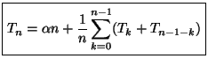
This simplifies at once (why?) to
Tn =
n + 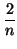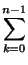
Tk
This is a `full-history' recurrence, and the usual way to deal with
such things is to get rid of the history by elimination between two
successive formulas. From the above
| 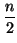(Tn - n) |
= T0 + ... + Tn - 1 |
|
| 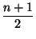(Tn + 1 - (n + 1)) |
= T0 + ... + Tn - 1 + Tn |
|
Subtract these and get, after a bit of rearranging,
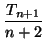 = 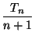 + 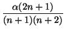
Let
Sn = Tn/(n + 1). Then
Sn + 1 = Sn +
Hence
Sn = S0 + 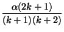
You get at the value of this sum by using partial fractions, just as you
would if integrating. You can check that
| Sn |
= S0 + 3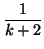 - 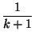, |
|
| |
= S0 + 3(Hn + 1 - 1) - Hn = S0 + 2Hn + 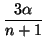 - 3. |
|
So we have, going back to T
Tn = 2
(
n + 1)
Hn + (
S0 - 3
)(
n + 1) + 3
This is a bit complicated, but remember that
Hn ln n. So, for
large values of n we can reasonably say that
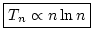
For large values of n this should be a huge improvement on the O(n2)
time taken by our previous algorithms. To give you some idea of the
improvement, consider the values in Table 2.2
Table 2.2:
A comparison of n2 and n log n for different values of n.
| 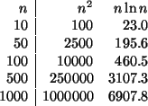 |
Next: Merge Sort
Up: A better sort: Quicksort
Previous: A better sort: Quicksort
Contents
Index
Ian Craw
2001-04-27